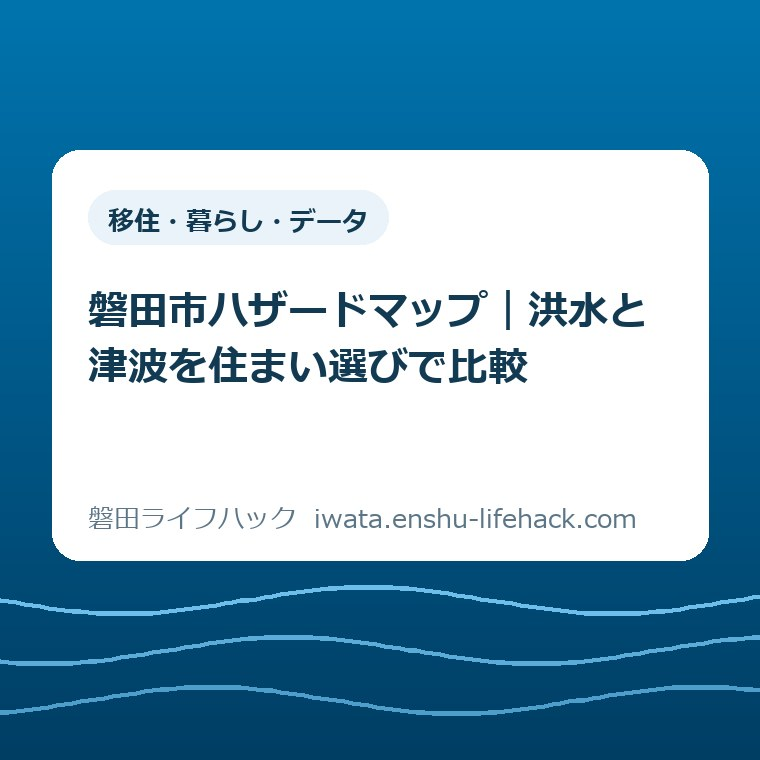
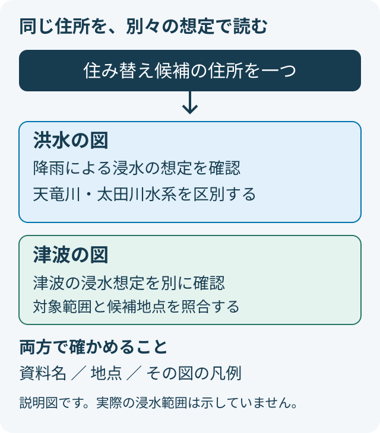
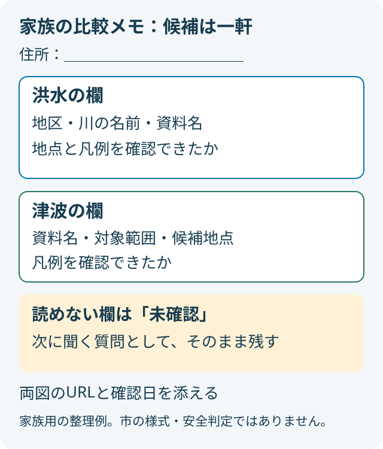

移住・暮らし・データ
磐田市ハザードマップ｜洪水と津波を住まい選びで比較

この記事の要点
Q. 住み替え候補の家は、洪水の地図だけ見ればよいですか？
A. 洪水と津波は別の想定を示す地図です。住所や建物、家族の移動条件で確認事項は変わります。住み替え候補の住所一つを両方の図で照合し、図の名前・凡例・確認日を一緒に残します。地図の色だけで安全や購入の可否を決めず、最後は磐田市公式の最新資料で確認してください。
家探しの手間を増やさず、同じ住所で比べる
住み替え先を探すご家族は、すでに時間を使っています。家賃や価格を調べ、通勤経路を見て、子どもの送迎や親の通院を考える。その途中で防災の地図まで何枚も開くのは、軽い作業ではありません。見慣れない色の付いた図を渡されても、何を比べればよいのか戸惑うのは自然です。
住所や建物の条件、家族が移動できる方法によって、確かめる内容は変わります。制度や施設の利用条件も一律ではありません。この記事は特定の家を安全と判定するものではなく、磐田市の洪水と津波の地図を、同じ家の検討材料として読み分けるための案内です。
大石浩之（磐田市／不動産業）として、私はまず比較する住所を一つに絞る方法を提案します。候補を全部調べ終えてからでなければ話し合えない、という順番にはしません。一軒について分かったことと分からないことが区別できれば、次に誰へ何を尋ねるかを決められます。
内閣府は、毎年11月5日を「津波防災の日」と案内しています。2026年11月1日の日曜日は、その日を前に住まいの確認をする機会にできます。今年だけの新制度や、磐田市で当日に開催される催しを紹介しているわけではありません。
市内の暮らしを考えるときは、水害以外の距離も残しておきたいところです。市役所と四つの支所から暮らしの距離を考えた記事は、移動の負担を整理する入口になります。本稿では話を広げすぎず、洪水と津波という二つの図の違いに焦点を置きます。
洪水と津波は、何を示す地図なのか
磐田市の「洪水ハザードマップ」は、想定し得る最大規模の降雨による浸水の想定、深さ、避難場所などを示す資料です。一方、市の総合案内には、津波浸水想定区域と浸水深を示す図が別に置かれています。洪水の図を見たことと、津波の図を見たことは同じではありません。
ここで比べたいのは、青色が濃いか薄いかではなく、その図が何を想定しているかです。画面の見た目が似ていても、資料の題名が違えば同じ問いに答えているとは限りません。まず上部や表紙の題名を読み、洪水か津波かを言葉で確かめてから、候補地を探します。
「浸水深」という言葉も、数字だけを切り出さずに読みます。どの範囲を何色で表しているのかは、その図の凡例と説明で確認する必要があります。別の図で覚えた色の意味を持ち込むと、同じ色に見えたという印象だけで比較することになってしまいます。
私は、見つけた数値をいきなり家族の一覧表へ転記するより、資料名を先に書くことを勧めます。「洪水の図ではこう読んだ」「津波の図ではここまで確認した」と主語を付けるためです。誰かがあとから見直しても、出典へ戻れる記録にしておくと、聞き直す手間を減らせます。

洪水は天竜川と太田川水系を分けて読む
磐田市の洪水ハザードマップの地図面には、天竜川と太田川水系が分けて掲載されています。地区も磐田地区の北部・中部・南部、福田、竜洋、豊田、豊岡に分かれています。「磐田の洪水地図を一枚見た」という記憶だけでは、どの資料を開いたのか分からなくなります。
例えば竜洋地区の家を検討するなら、地区名を確認したうえで、天竜川と太田川水系のどちらの図を見ているかを記録します。これは特定の住所の浸水深を述べた例ではありません。同じ地区の欄に複数の資料があるため、資料を取り違えないための読み方です。
目の前の道路が分かるまで拡大したあと、図の題名や凡例が画面外へ消えることがあります。家族に画像を送るときは、地点だけの切り抜きにせず、元のページへのリンクも添えると確認し直せます。画像の色だけが一人歩きしないよう、記録には川の名前も残します。
地図上で候補の家を特定できない場合は、無理に近くの色を読んで埋めません。募集図面の住所表記と地図の表示が合っているか、建物や道路の位置が一致するかを確かめる段階です。地点が曖昧なまま詳しい数字を書いても、別の場所の数字なら比較の材料になりません。
この段階で購入や賃貸の結論を出す必要はありません。先に候補地点を確かめ、その地点についてどの資料を確認できたかをそろえます。調べる人と現地を見る人が別でも、「天竜川は確認、太田川水系は未確認」と分けておけば、作業を引き継げます。
津波の図と、避難を考える資料を区別する
磐田市の「磐田市ハザードマップ」では、津波浸水想定マップの項目に、竜洋地区と福田地区の図が掲載されています。同じ項目から津波避難施設一覧へも進めます。洪水の地区別資料とは、入口の並び方が異なります。
調べたい住所が津波の図のどこに当たるか分からないときは、「図を見つけられない」と「浸水の想定がない」を同じ意味にしないことです。掲載項目の名前だけでは、自分の住所についての答えは出ません。対象範囲と地点の照合ができたかを、別々に確認します。
市の「磐田市津波避難計画」の案内には、避難対象地域や避難の方法などが主な内容として挙げられています。浸水を示す図と、避難の考え方を説明する資料は役割が違います。地図で場所を見つけたことだけで、家族の避難の段取りまで決まったとは考えません。
本稿では、個別施設の高さ、到着までの時間、特定の家からの避難経路は判定していません。これらを確認していないまま、「この建物なら十分」「この道なら間に合う」とは書けないためです。現地の条件を含む答えは、市の最新資料と、その住所についての確認を重ねる必要があります。
警報や避難指示の意味を整理する段階では、危険警報と避難指示の違いを扱った記事も参照できます。ただし、洪水の情報を津波の行動基準へそのまま当てはめるためのリンクではありません。災害の種類を分けて資料を読む姿勢を共通にします。
地図の色を、そのまま家の点数にしない
ハザードマップの比較は、家に合格点や不合格点を付ける作業とは分けたいと私は考えます。図から読み取る想定と、建物の構造、使う部屋、家族が移動できる条件は、同じ欄にまとめられません。地図を見終わっても、建物について別に調べることが残ります。
例えば「二階がある」という情報は、募集図面から分かる場合があります。しかし、それだけで災害時の滞在場所として適切かを決めることはできません。本稿の図は建物の安全性を評価する資料ではないため、階数を避難方法の答えに置き換えないようにします。
価格や家賃の比較表と、防災の確認メモは、並べて見られても別の欄に残すのが私の提案です。毎月の支出が抑えられることと、家族の移動の負担が小さいことは別の条件です。一つの長所でほかの未確認事項を消さず、家族が何を確かめたいのかを見える形にします。
色が付いていないように見えたときも、まず地点や対象範囲、表示中の図が合っているかを確かめます。さらに、洪水と津波のどちらか一方を見ただけなのか、両方を照合できたのかを区別します。本稿は無着色を根拠に、あらゆる災害への安全を保証するものではありません。
反対に、色が付いているという理由だけで、ご家族の暮らし方を否定する記事にもしたくありません。すでにその地域で暮らす方には、仕事や家族、日々の移動に理由があります。読者が払っている負担を認めたうえで、次に確認できる材料を示すことに徹します。
良い点は、家から資料を見比べられること
市の洪水ハザードマップの案内には、2026年1月から市の地図情報提供サービスでも情報を提供すると記載されています。スマートフォンやパソコンから見られることは、窓口へ行く日を合わせにくい家族にとって使いやすい点です。最初の資料探しを自宅で進められます。
私は、家族が同じ資料へ戻れることにも価値があると考えます。調べた人の記憶だけに頼らず、別の人が時間の空いたときに題名や地点を見直せます。意見が違ったときも、まず同じ図を開いているかを確かめれば、話し合いの入口をそろえられます。
もう一つの良い点は、市の総合案内で複数の災害の入口を見渡せることです。ただし、この記事で各災害の図をすべて照合したわけではありません。洪水と津波を比較した結果を、土砂災害や高潮などを含む総合判定へ広げない線引きも必要です。
注文したい点は、確認した範囲が伝わる案内
私が案内に望むのは、利用者が「どこまで見たか」を短く残せる形です。地図の入口が集まっていても、地区や川の名前、凡例を次々に読み替える負担は残ります。利用者が分からないのは勉強不足だからだ、という扱いにはしたくありません。
例えば、住所、資料名、確認日、まだ読めない点を一つのメモに置ければ、窓口や不動産会社へ質問するときに使えます。これは市が配布する様式の紹介ではなく、私からの提案です。本稿の図2も、申請書や証明書ではなく、家族のための整理例として作りました。
分かりやすい説明にしようとして条件を削り過ぎることには、私自身も迷いがあります。短く「この地域は大丈夫」と言えば読みやすくても、住所や図の条件が抜けてしまいます。私は、短い結論の横に未確認の欄を残すほうを選びます。読みやすさと断定は同じではありません。
対案・結論——今日は候補住所一つの比較メモ
今日できる一歩は、住み替え候補の住所一つについて、洪水と津波の確認メモを作ることです。一度に全候補を順位付けする必要はありません。市公式の入口を開き、同じ地点について二つの資料を探し、確認できた範囲を一枚に残します。
洪水の欄には、地区名と天竜川・太田川水系のどの図かを書きます。津波の欄には、開いた図の名前と地点を照合できたかを書きます。数値を書けるのは、地点と凡例を確かめられたときだけです。分からない欄は空想で埋めず、「未確認」と記します。
最後に、二つの図それぞれのURLと確認日を添えます。更新日が表示されているページでは、その日付も別に控えると、あとで同じ資料かを見直せます。「今日見た日」と「資料が更新された日」を分けるだけで、家族間の情報の行き違いを減らす助けになります。

家族と現地を確かめる前に
比較メモに未確認が残ったら、そのまま質問に変えます。「この住所をどの図で見るか」「天竜川と太田川水系の図をどう選ぶか」「凡例のこの表示をどう読むか」のように、資料と困った箇所を組み合わせます。漠然と安全かを尋ねるより、確認したい範囲を伝えやすくなります。
不動産会社に尋ねるときも、家の紹介資料と地図の説明を分けて受け取ります。建物の条件について聞いた回答を、地域全体の災害想定についての回答へ読み替えないためです。資料の日付や出典が分からない場合は、その点を質問として残してください。
暮らしの現地確認では、普段の買い物や通勤と、災害への備えを混同しないことも必要です。普段歩きやすいと感じた道について、災害時にも使えるとこの記事から断定することはできません。避難の具体は、市の資料と実際の条件を確認する別の課題として扱います。
移住の検討で家族の質問をまとめる考え方は、暮らし体験ツアーの申込前に作る家族メモの記事にも通じます。ただし、そこで紹介した2026年の申込期限は10月18日です。現在の募集案内としてではなく、家族の確認事項を整理する読み物として参照してください。
大石の視点——調査を家族一人の仕事にしない
私は、住まいの資料を集める担当が一人に偏らないようにしたいと考えます。詳しく調べた人ほど、家族から結論まで求められがちです。しかし、地図を探すこと、図を読み解くこと、住む家を決めることは別の仕事です。一人が全部の責任を引き受ける必要はありません。
私なら、まず資料名と住所をそろえるところを今日の成果にします。読み取れなかった点が残っても、次に聞く内容が具体的になれば前進です。家族の負担を減らすための調査が、調べ終わらない人を責める材料になっては逆効果だと思います。
意外に見落としやすいのは、洪水の地図だけでも川ごとに資料が分かれていることです。私は「一枚見た」より「何の図を見た」を大切にします。この違いを押さえれば、家族の会話を印象から確認できる材料へ戻せます。ここまでの提案は、私の判断として述べています。
よくある質問
洪水の図だけで津波の確認も済みますか？
済みません。磐田市は洪水と津波の図を別に案内しています。洪水の図は降雨による浸水の想定を扱います。候補住所について津波の図も開き、対象範囲と地点を照合してください。同じ住所でも、確認した資料名と日付は分けて残します。
色が付いていない家なら安全ですか？
本稿では安全と判定できません。地点、対象範囲、図の種類、凡例を確かめたかを見直してください。洪水・津波の図を見たことは、建物やほかの災害を含む安全確認の完了とは異なります。個別の疑問は、図と住所を示して市の担当窓口へ確認してください。
今日、家族で何を一つすればよいですか？
候補住所一つの比較メモを作ります。洪水と津波を別欄にし、資料名、URL、確認日、読めなかった点を残してください。分からない欄は未確認のままで構いません。購入や契約の結論を急がず、最後は磐田市公式の最新ページで確認してください。
地図で津波避難タワーの名前を見つけたら、避難に使える高さを市の施設表で確かめる方法も参照できます。
参考にした公式情報
- 内閣府：津波防災の日について（2026年11月1日確認）
- 磐田市：磐田市ハザードマップ（2026年11月1日確認）
- 磐田市：洪水ハザードマップ（2026年11月1日確認）
- 磐田市：磐田市津波避難計画（2026年11月1日確認）
最終確認日：2026-11-01 ／ 本記事は公表情報と執筆者の見解を分けて記載しています。制度・数値・公開状況は変更される場合があるため、最新情報は磐田市公式ページでご確認ください。